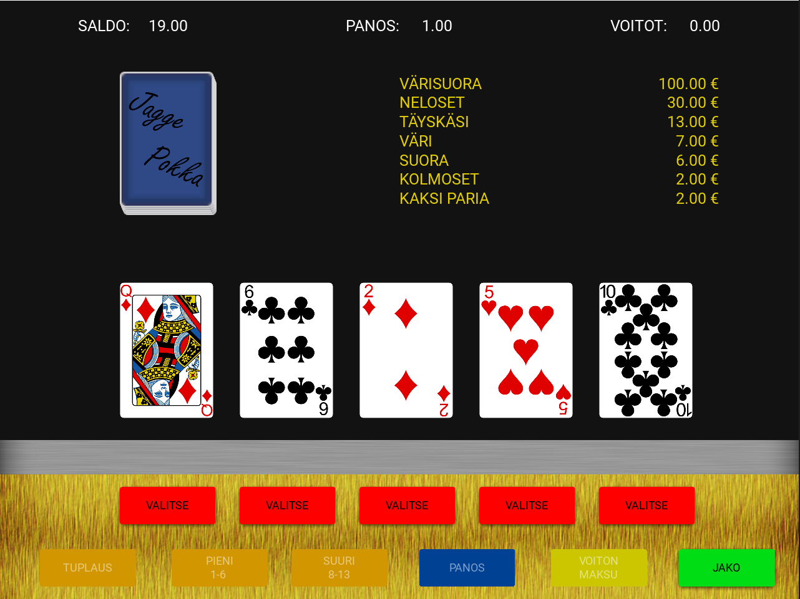
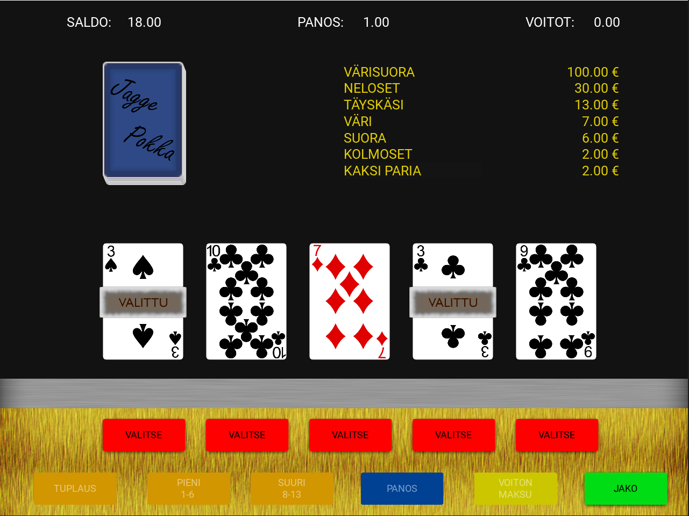
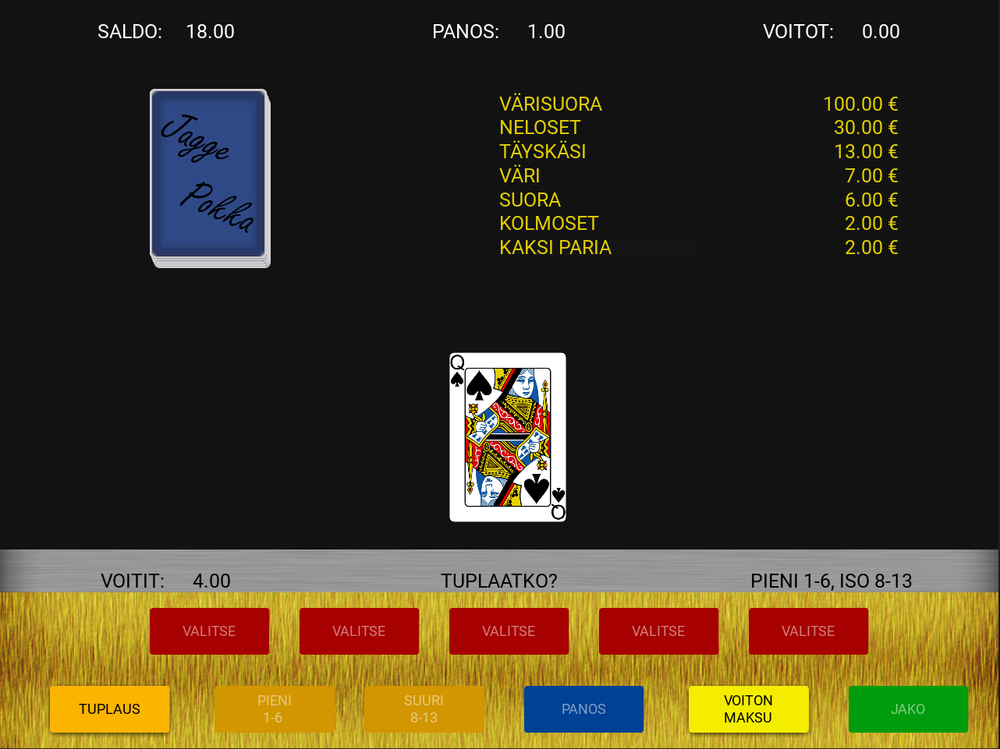

JaggePokka
Idea tähän projektiin tuli, kun halusin harjoitella Pythonia enemmän kuin mitä kurssiprojekteissa on tullut tehtyä. Lähdin toteuttamaan projektia ihan nollasta miettimällä, miten peli voisi toimia ja miten se kannattaisi toteuttaa. Mielessä oli, että Pokeri pelistä tulisi tulevaisuudessa fyysinen laite, jossa on näyttö sekä fyysiset painikkeet. Ehkä jopa kosketusnäyttö, tämän takia frameworkiksi valikoitui KivyMd.
Pääruutu (Kuva suurenee klikkaamalla)
Ensimmäinen haaste oli pakan toteutus sekä se, miten valitaan pakasta näytettävät kortit. Tähän käytin listaa johon luotiin 52 korttia ja Pythonin random -funktio hakee listasta viisi korttia. Listan nimien perusteella haetaan kortteja vastaavat kuvat näytölle. Haetut kortit poistetaan pakasta, koska pakka ”sekoitettaan” ainoastaan pelin alussa. Pelissä on käytetty animaatioita luomaan mielikuva pakan sekoittamisesta sekä korttien jakamisesta.
Valitut kortit (Kuva suurenee klikkaamalla)
Myös korttien kiinnitys on animoitu, jotta se olisi pelaajalle visuaalisempi kokemus.
Tuplaus (Kuva suurenee klikkaamalla)
Tuplaus ominaisuus toimii lähes samalla periaatteella, mutta se hakee vain yhden kortin ja vertailee vain onko kortti pieni vai iso.
Pelilogiikan isoin osa koostuu lukujen pyörittelystä sekä korttien vertailusta, jotta voidaan todeta mahdollinen voitto sekä laskea voitto summa.
JaggePokka oli projektina todella mielenkiintoinen ja sitä tehdessä oppi paljon koodaamisesta. Pelin toteuttaminen oli hauska projekti sekä sitä tehdessä joutui ratkomaan erinäisiä ongelmia. Vaikka pelin toiminnallisuudet ovatkin valmiit, on projektissa vielä paljon tehtävää.
Mitä tulevaisuudessa? Jatko kehitys
- Grafiikkojen parantelu
- Äänet
- Rahojen tallennus
Linkki lähdekoodiin:
Lähdekoodi Githubissa